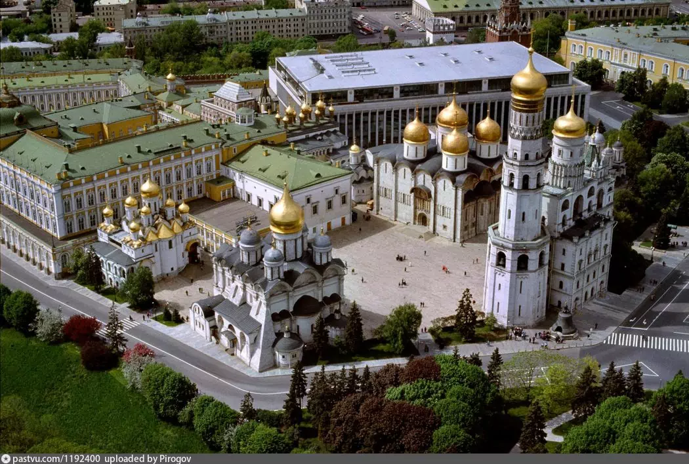
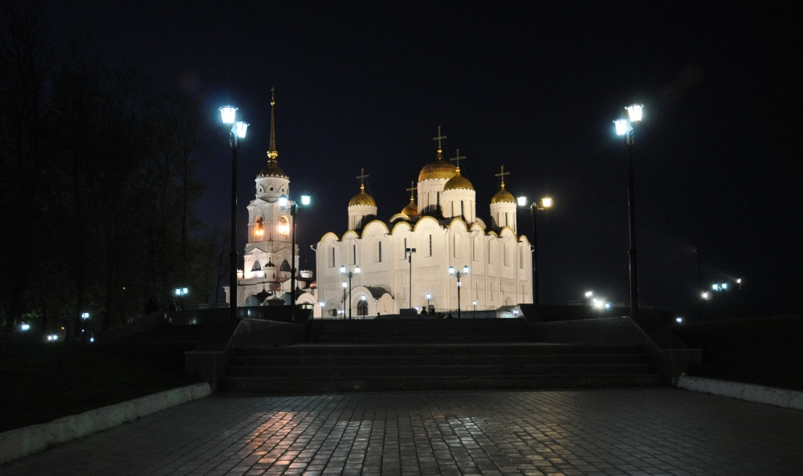
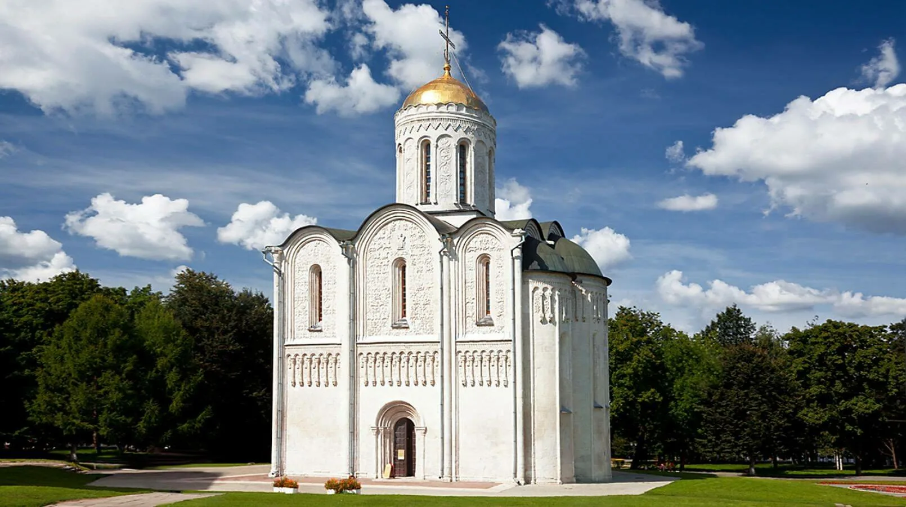

Соборная площадь
Галерея




Основная информация
Категория: Архитектурный ансамбль
Время работы: Круглосуточно (территория)
Стоимость: Бесплатно
Адрес: ул. Соборная, Владимир
Описание
Соборная площадь — историческое сердце Владимира и главный туристический центр города. Здесь расположены знаменитые белокаменные храмы XII века, включая Успенский и Дмитриевский соборы, внесённые в список Всемирного наследия ЮНЕСКО.
Площадь является центром культурной и духовной жизни города уже более 800 лет.
Отзывы посетителей
Мария: Очень красивое место! Особенно впечатляет вечером с подсветкой.
Алексей: Обязательно посетите все соборы на площади. Историческая атмосфера на высшем уровне.